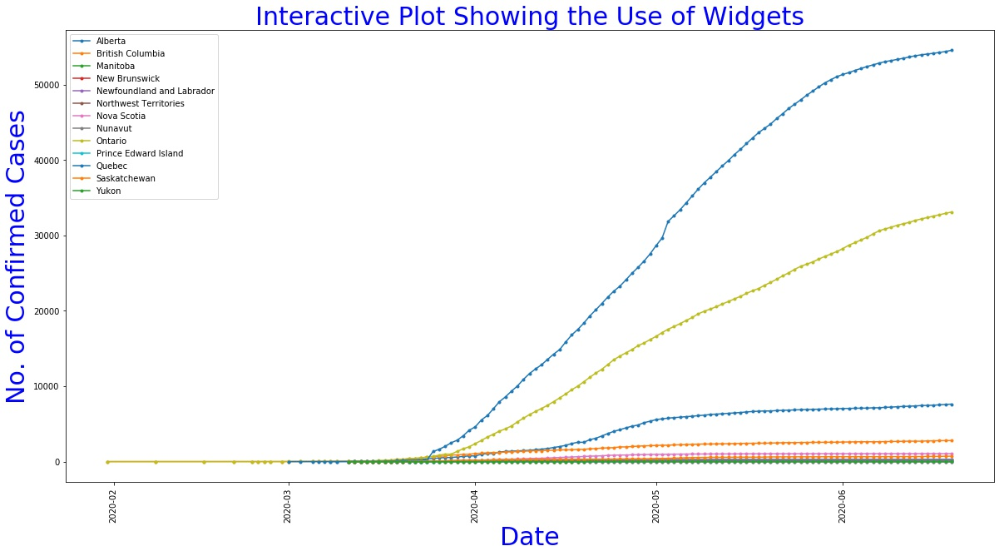

class: center, middle # CMSC 6950 FINAL PROJECT Process, Analyze and Present the current Canadian Covid-19 data. #Group 5 Members <ul> <li>Miranda Boutilier</li> <li>Collins Bekoe</li> <li>Victor Abodunrin</li> </ul> --- # Agenda <ol> <li>Minimum Core Tasks</li> <li>Free Choice Tasks</li> </ol> --- # Minimum Core Tasks #Q1 --- #Q2 <img>  --- # Free Choice Tasks